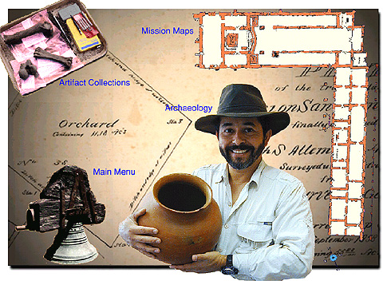

Screen 2: The first screen that greets the viewer after
the intro sequence provides the option of bypassing the Old Mission and
going directly to the archaeology, artifact, and map collections from the
Old Mission and community.
Text, Photographs, and Multimedia
Copyright Ruben G. Mendoza, 2000
Back Main
Forward